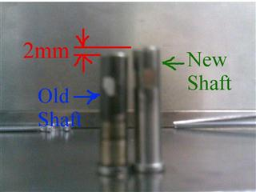

Service History
Subject: NS-8040 Replacement of Miniature bearing for output shuttle
Handler Model: NS-8040 (S/N: 181213)
Controller: RC520
Date: 26 Mar 2009
Symptom
Pulley able to move in Y direction when output shuttle 1 at certain direction.
Abnormal high pitch noise heard from output shuttle 1 during production.
Action
Replaced miniature bearing for shuttle 1 pulley bearing.
Do AutoTeaching by NS-8040 GUI for P21 and P23.
Dummy devices run and alignment check, ok.
Cause
Remarks
At Infineon this morning to replaced the (S0351) Miniature Bearing (R33ZT80133500, Model: F698ZZ) and (S0350) Pulley Shaft for NS-8040(S/N: 181213)(evaluation handler).
Compared the old shaft and new shaft it seem that the new shaft is longer by 2mm, refer attached photo "Shaft.jpg".

I was worried that if use the new shaft, it may affect pivoting point and cause damage to the bearing or cause wear and tear to the timing belt of shuttle one, so I use back the old shaft after check that the shaft is not worn or bent.
Can you check with EPSON why the shaft length is different by 2mm?
According to EPSON, there was minor modification of the shaft.
There are two kind of the parts which is shorter (32mm) & Longer(34mm)
For initial systems were using shorter one and later one using longer one.
So infineon case, They are using shorter one.
There was a design change in the NS-8040.
For the old design NS-8040, the shuttle timing belt is adjusted at the pulley side.
For new design NS-8040, the shuttle timing belt is adjusted at the motor side(with the pulley at a fixed position->cannot adjust). I think the new design for the pulley side, the block to hold the bearing and pulley is thicker, so a longer shaft is required.
Important note is that longer length(34mm) CANNOT USE on the old design NS-8040.